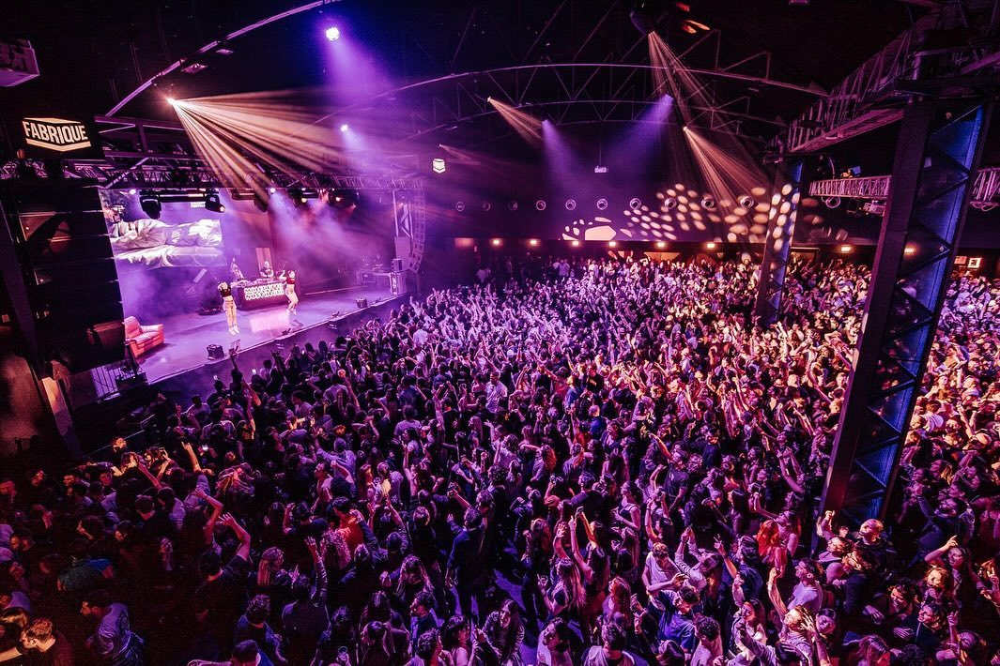

Nightlife
La sera è uno dei momenti più attivi della giornata nella grande capitale della moda. In ogni angolo si trova un locale pronto ad accoglierti e a riempirsi di persone con voglia di uscire e divertirsi.
Una delle zone più frequentate è Porta Venezia, soprattutto tra Via Melzo e Via Lecco, dove si concentrano locali, bar e tanta gente giovane. Un’altra area molto viva è quella dei Navigli, punto di incontro per studenti e ragazzi di diverse nazionalità, perfetta per un aperitivo o per una serata informale lungo i canali.Un’altra zona interessante è Porta Romana: non è tra le più conosciute e, a sorpresa, è frequentata addirittura da pochi milanesi. Proprio per questo offre un’atmosfera più tranquilla ma comunque piena di bei locali e posti in cui ritrovarsi, ideale per chi cerca qualcosa di meno caotico ma comunque vivo.
Lasciaci un consiglio